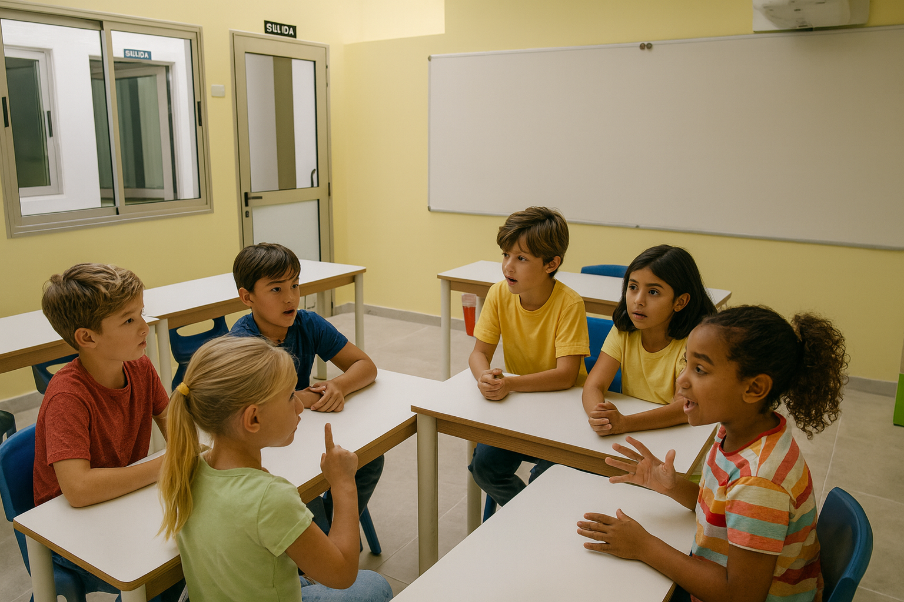

Academia de inglés en Playa de Arinaga (Agüimes) para niños, adolescentes y adultos.
En Little England ofrecemos clases de inglés divertidas, eficaces y adaptadas a cada nivel. Nuestro enfoque es cercano, profesional y centrado en el aprendizaje real. Las clases son dinámicas, comunicativas y amenas, con metodología basada en la práctica constante y la participación activa.
Nuestros servicios
Cursos de infantil (3–5 años)

Descubre el mundo a través del inglés. Aprender inglés en la etapa infantil puede ser una experiencia divertida, afectiva y significativa. En nuestras clases, los más pequeños descubren, juegan y aprenden en un entorno seguro y motivador, donde se sienten acompañados en cada paso. A través de un currículo de 3 niveles, fomentamos habilidades fundamentales para la vida desde una edad temprana, como la cooperación, la escucha activa y el respeto, sentando así las bases para una transición exitosa a Primaria. Nuestras clases están llenas de actividades dinámicas, canciones, juegos, cuentos y movimiento. Todo se imparte en inglés, sumergiendo al alumnado en el idioma desde el primer día y despertando su curiosidad por otras culturas. Los grupos están organizados por edad, asegurando que el aprendizaje y las actividades sean apropiadas para cada etapa del desarrollo.
Primaria (6–12 años)
En esta etapa, los niños están llenos de curiosidad y energía—¡y nuestras clases de inglés están diseñadas para estar a la altura! Los cursos de primaria son divertidos, dinámicos y, sobre todo, comunicativos.
A través de juegos interactivos, actividades en grupo, canciones y cuentos, los alumnos aprenden a expresarse con confianza en inglés. Damos prioridad a las habilidades orales y de comprensión auditiva, introduciendo poco a poco la lectura y la escritura de forma natural.
Nuestro enfoque fomenta la participación, amplía el vocabulario y ayuda a los niños a utilizar el inglés en situaciones reales desde el primer día. Creamos un ambiente relajado y positivo, donde cada niño se siente cómodo para hablar y avanzar a su ritmo.
Cursos de Adolescentes

Clases de inglés para adolescentes
Desarrollamos la fluidez, la confianza y el pensamiento crítico a través de actividades comunicativas reales, debates y trabajo en equipo.
Preparamos a los alumnos para los exámenes oficiales (A2, B1, B2, C1, C2) con materiales específicos y seguimiento personalizado.
Un inglés práctico y auténtico para su presente y su futuro académico y profesional.
Adultos

Clases de inglés para adultos
Cursos completos centrados en la comunicación oral, diseñados para mejorar la fluidez, la comprensión y la confianza al hablar.
Practicamos el inglés real, útil para viajes, trabajo, estudios o simplemente para disfrutar aprendiendo.
Grupos reducidos, ambiente relajado y clases adaptadas al ritmo y nivel de cada persona.
Contacto
Playa de Arinaga, Agüimes – Gran Canaria · Tel: 646 555 552 · Email: info@littleengland.es